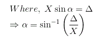

Describing Function Method of Non Linear Control System
Describing Function for Saturation Non Linearity
• Ideal Relay
• Real Relay (Relay with Dead Zone)
• Backlash Non Linearity
Let us recall the basic definition of linear system. Linear systems are those where principle of superposition ( if the two inputs are applied simultaneously, then output will be the sum of two outputs) is applicable but in case of highly non linear system we cannot apply principle of superposition. Analysis of different non linear system is very difficult because of non linear behavior. Also we cannot use pole zero method in order to analyse non linear systems because pole zero method is strictly restricted to linear systems. Instead of these disadvantages, there are some advantages of having non linear systems and they are written below:
- Non linear systems can perform better than the linear systems.
- Non linear systems are less costly than the linear systems.
- They are usually small and compact in size as compared to linear system.
In practice, all physical systems have some kind of non linearity. Sometimes it may even be desirable to introduce a non linearity deliberately in order to improve the performance of a system and making its operation safer. At it result, the system is more economical than linear system. One of the simplest examples of a system with an intentionally introduced non linearity is a relay controlled or ON/OFF system. For instance, in a typical home heating system, a furnace is turned ON when the temperature falls below a certain specified value and OFF when the temperature exceeds another given value.
Here we are going to discuss two different types of analysis or method for analyzing the non linear systems. The two methods are written below and briefly discussed with the help of example.
- Describing function method in control system
- Phase plane method in control system
Common Non Linearities
In most control systems we can not avoid the presence of certain types of non linearities in control system. These can be classified as static or dynamic. A system for which there is a nonlinear relationship between input and output, that does not involve a differential equation is called a static non linearity. On the other hand, the input and output may be related through a non linear differential equation. Such a system is called a dynamic non linearity.
Now we are going to discuss various types of non linearities in control system:
- Saturation non linerities
- Friction non linerities
- Dead zone non linerities
- Relay (ON/OFF controller) non linerities
- Backlash non linerities
Saturation Non Linearities
We have seen this type of non linearity many times. For example we have seen saturation in the magnetizing curve of DC motor. In order to understand this type of non linearity let us discuss saturation curve or magnetizing curve which is given below:
Saturation Non Linearity
From the above curve we can see that the output showing linear behavior in the beginning but after that there is a saturation in the curve which one kind of non linearity in the system. We have also shown approximated curve.
Same type of saturation non linearity also we can see in an amplifier for which the output is proportional to the input only for a limited range of values of input. When the input exceeds this range, the output tends to become non linearity.
Non Linear Friction
Anything which opposes the relative motion of the body is called friction. It is a kind of non linearity present in the system. The common example in an electric motor in which we find coulomb friction drag due to the rubbing contact between the brushes and the commutator.
Non Linear Friction
Friction may be of three types and they are written below:
- Static friction: In simple words, the static friction acts on the body when the body is at rest.
- Dynamic friction : Dynamic friction acts on the body when there is a relative motion between the surface and the body.
- Limiting friction: It is defined as the maximum value of limiting friction that acts on the body when it is at rest.
Dynamic friction can also be classified as (a) Sliding friction (b) Rolling friction. Sliding friction acts when two bodies slides over each other while rolling acts when the bodies rolls over another body.
In mechanical system we have two types of friction namely (a) Viscous friction (b) Static friction.
Dead Zone Non Linearities
This type of non linearity is shown by various electrical devices like motors, dc servomotors, actuators etc. Dead zone non linearities refer to a condition in which output becomes zero when the input crosses certain limiting value.
Dead Zone Non Linearity
Relays ( ON/OFF Controller ) Non Linearities
Electromechanical relays are frequently used in control systems where the control strategy requires control signal with only two or three states. This is also called as ON / OFF controller or two state controller.
Relay Non Linearity (a) ON/OFF (b) ON/OFF with Hysteresis (c) ON/OFF with Dead Zone
Backlash Non Linearities
Another important non linearity commonly occurring in physical system is hysteresis in mechanical transmission such as gear trains and linkages. This non linearity is somewhat different from magnetic hysteresis and is commonly reffered to as backlash non linearities. Backlash in fact is the play between the teeth of the drive gear and those of the driven gear. Consider a gear box as shown in below figure (a) having backlash as illustrated in fig (b).
Backlash Non Linearity
Fig (b) shows the teeth A of the driven gear located midway between the teeth B1, B2 of the driven gear. Fig (c) gives the relationship between input and output motions. As the teeth A is driven clockwise from this position, no output motion takes place until the tooth A makes contact with the tooth B1 of the driven gear after travelling a distance x/2. This output motion corresponds to the segment mn of fig (c). After the contact is made the driven gear rotates counter clockwise through the same angle as the drive gear, if the gear ratio is assumed to be unity. This is illustrated by the line segment no. As the input motion is reversed, the contact between the teeth A and B1 is lost and the driven gear immediately becomes stationary based on the assumption that the load is friction controlled with negligible inertia.
The output motion therefore causes till tooth A has travelled a distance x in the reverse direction as shown in fig (c) by the segment op. After the tooth A establishes contact with the tooth B2, the driven gear now mores in clockwise direction as shown by segment pq. As the input motion is reversed the direction gear is again at standstill for the segment qr and then follows the drive gear along rn.
Describing Function Method of Non Linear Control System
The describing function method in control system was invented by Nikolay Mitrofanovich Kryloy and Nikolay Bogoliubov in year of 1930 and later it developed by Ralph Kochenburger.
Describing function method is used for finding out the stability of a non linear system. Of all the analytical methods developed over the years for non linear control systems, this method is generally agreed upon as being the most practically useful. This method is basically an approximate extension of frequency response methods including Nyquist stability criterion to non linear system.
The describing function method of a non linear system is defined to be the complex ratio of amplitudes and phase angle between fundamental harmonic components of output to input sinusoid. We can also called sinusoidal describing function. Mathematically,
Where, N = describing function,
X = amplitude of input sinusoid,
Y = amplitude of fundamental harmonic component of output,
φ1 = phase shift of the fundamental harmonic component of output.
Let us discuss the basic concept of describing function of non linear control system.
Let us consider the below block diagram of a non linear system, where G1(s) and G2(s) represent the linear element and N represent the non linear element.
A Non Linear System
Let us assume that input x to the non linear element is sinusoidal, i.e,
For this input, the output y of the non linear element will be a non sinusoidal periodic function that may be expressed in terms of Fourier series as
Most of non linearities are odd symmetrical or odd half wave symmetrical; the mean value Y0 for all such case is zero and therefore output will be,
As G1(s) G2(s) has low pass characteristics , it can be assumed to a good degree of approximation that all higher harmonics of y are filtered out in the process, and the input x to the nonlinear element N is mainly contributed by fundamental component of y i.e. first harmonics . So in the describing function analysis, we assume that only the fundamental harmonic component of the output. Since the higher harmonics in the output of a non linear system are often of smaller amplitude than the amplitude of fundamental harmonic component. Most control systems are low pass filters, with the result that the higher harmonics are very much attenuated compared with the fundamental harmonic component.
Hence y1 need only be considered.
We can write y1(t) in the form ,
Where by using phasor,
The coefficient A1 and B1 of the Fourier series are given by-
From definition of describing function we have,
Let us find out describing function for these non linearities.
Describing Function for Saturation Non Linearity
We have the characteristic curve for saturation as shown in the given figure.
Characteristic Curve for Saturation Non Linearity
Let us take input function as
Now from the curve we can define the output as :
Let us first calculate Fourier series constant A1.
On substituting the value of the output in the above equation and integrating the function from 0 to 2π we have the value of the constant A1 as zero.
Similarly we can calculate the value of Fourier constant B1 for the given output and the value of B1 can be calculated as,
The phase angle for the describing function can be calculated as
Thus the describing function for saturation is
Describing Function for Ideal Relay
We have the characteristic curve for ideal relay as shown in the given figure.
Characteristic Curve for Ideal Relay Non Linearity
Let us take input function as
Now from the curve we can define the output as
The output periodic function has odd symmetry :
Let us first calculate Fourier series constant A1.
On substituting the value of the output in the above equation and integrating the function from 0 to 2π we have the value of the constant A1 as zero.
Similarly we can calculate the value of Fourier constant B1 for the given output and the value of B1 can be calculated as
On substituting the value of the output in the above equation y(t) = Y we have the value of the constant B1
And the phase angle for the describing function can be calculated as
Thus the describing function for an ideal relay is
Describing Function for Real Relay (Relay with Dead Zone)
We have the characteristic curve for real realy as shown in the given figure. If X is less than dead zone Δ, then the relay produces no output; the first harmonic component of Fourier series is of course zero and describing function is also zero. If X > &Delta, the relay produces the output.
Characteristic Curve for Real Relay Non Linearities
Let us take input function as
Now from the curve we can define the output as

The output periodic function has odd symmetry :
Let us first calculate Fourier series constant A1.
On substituting the value of the output in the above equation and integrating the function from 0 to 2π we have the value of the constant A1 as zero.
Similarly we can calculate the value of Fourier constant B for the given output and the value of B can be calculated as
Due to the symmetry of y, the coefficient B1 can be calculated as follows,
Therefore, the describing function is
Describing Function for Backlash Non Linearity
We have the characteristic curve for backlash as shown in the given figure. Let us take input function as
Characteristic Curve of Backlash Non Linearity
Now from the curve we can define the output as
Let us first calculate Fourier series constant A1.
On substituting the value of the output in the above equation and integrating the function from zero to 2π we have the value of the constant A1 as
Similarly we can calculate the value of Fourier constant B for the given output and the value of B1 can be calculated as
On substituting the value of the output in the above equation and integrating the function from zero to pi we have the value of the constant B1 as
We can easily calculate the describing function of backlash from below equation
 by
by